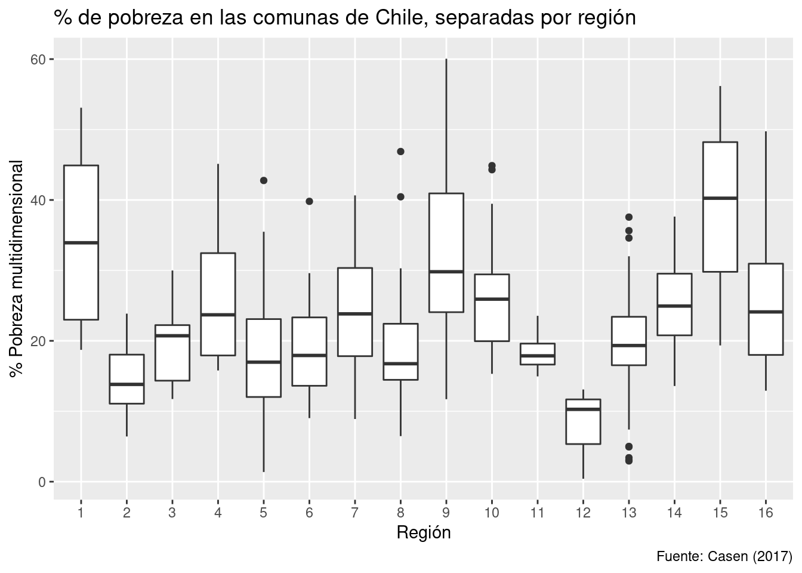
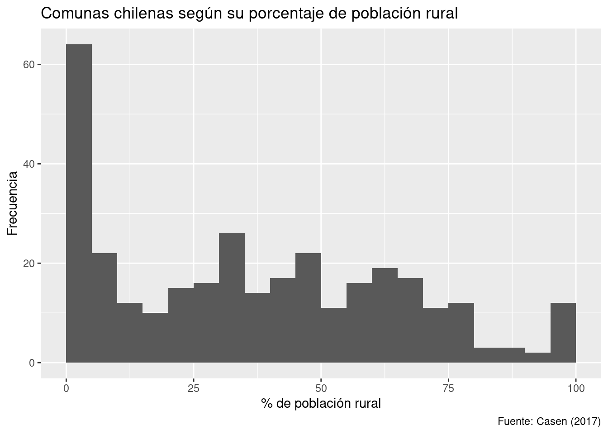
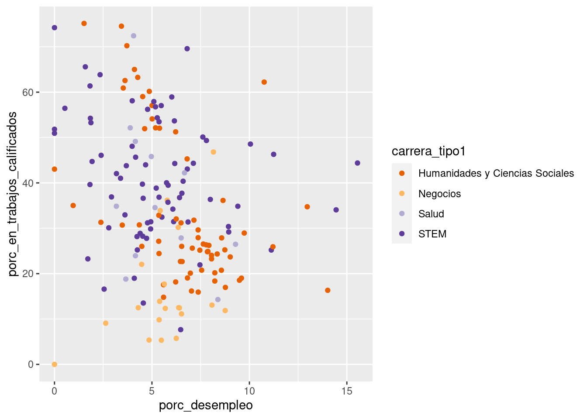
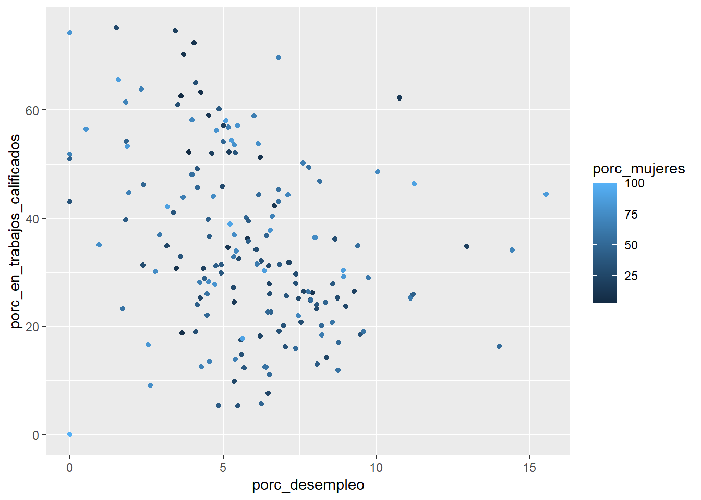
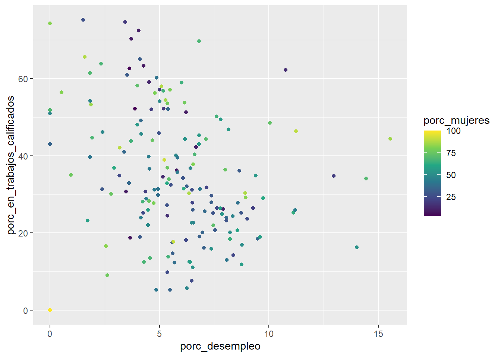
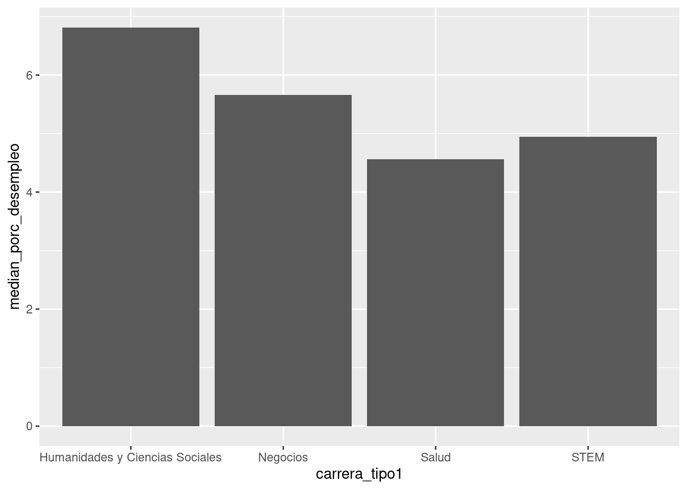
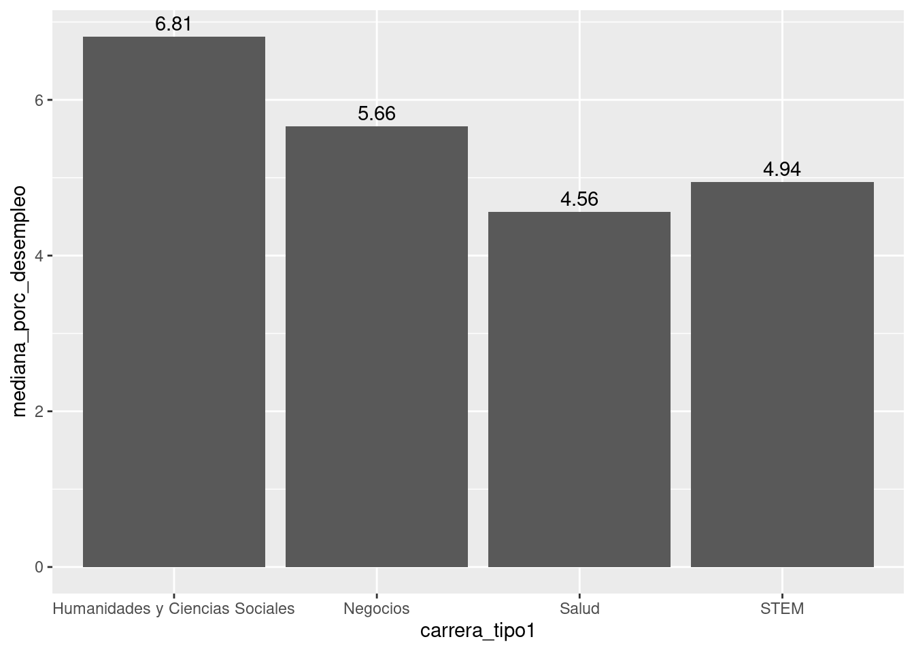

03C - Visualización de datos (personalización)
Si quieres correr este script localmente, debe haber descargado el proyecto, como se explica al comienzo del script 3A.
Como al principio de todo script, recomiendo reiniciar R. Esto lo conseguimos con Session > Restart R y clickeando en la escoba del panel de “Environment” (superior derecho).
Inicio: cargar paquetes, base de datos
library(tidyverse)Cargar de datos: municipios
Carguemos nuestra base de datos en formato .rds. Tiene información comunal construida a partir de dos fuentes: la encuesta Casen 2017 y los resultados de las elecciones municipales del año 2016.
df_municipios <- read_rds("datos/datos_municipios.rds")Gráfico de ejemplo
ggplot(data = df_municipios,
mapping = aes(x = as.factor(region),
y = porc_pobres_md4)) +
geom_boxplot() +
labs(x = "Región", y = "% Pobreza multidimensional",
title = "% de pobreza en las comunas de Chile, separadas por región",
caption = "Fuente: Casen (2017)")
Gráficos como objetos / guardar gráficos en el disco
Podemos crear los gráficos como objetos en R. Hagamos esto para nuestro gráfico anterior:
p_pobreza_sep_region <- ggplot(data = df_municipios,
mapping = aes(x = as.factor(region),
y = porc_pobres_md4)) +
geom_boxplot() +
labs(x = "Región", y = "% Pobreza multidimensional",
title = "% de pobreza en las comunas de Chile, separadas por región",
caption = "Fuente: Casen (2017)")Para generarlos, los llamamos en la consola:
p_pobreza_sep_region
Podemos continuar con cadenas de ggplot2 a partir de objetos:
p_pobreza_sep_region +
geom_violin(alpha = 0.5)
También podemos guardar nuestros gráficos en el disco fácilmente, si es que son objetos:
ggsave(filename = "p_pobreza_sep_region.png",
plot = p_pobreza_sep_region)## Saving 7 x 5 in image¿Cómo conseguir que el gráfico tenga las proporciones que queremos? La mejor forma es modificando un poco algunos argumento de ggsave:
scaleedita la proporción de tamaños entre el plano y los elementos del gráfico. Valores menores a 1 harán los elementos más grandes.widthedita el ancho, en pulgadas.heightedita el alto, en pulgadas.Con
units = "cm"podríamos dar ancho y alto en centímetros.
[Aquí hay una guía completa sobre guardar gráficos en disco, escrita por Jenny Bryan (2018)]
Casi siempre me funciona bien ocupar scale = 0.8, height = 6 y width = entre 8 y 10 (dependiendo si es un gráfico ancho o no). Hay mucho de ensayo y error aquí!
ggsave(filename = "p_pobreza_sep_region.png",
plot = p_pobreza_sep_region,
scale = 0.8, height = 6, width = 10)Personalización de gráficos
Etiquetas (labs)
Esto es algo que ya hemos visto, y se consigue con el comando labs():
ggplot(data = df_municipios,
mapping = aes(x = alcalde_coalicion)) +
geom_bar() +
labs(x = "Coalición del alcalde", y = "Frecuencia",
title = "Alcaldías por coalición, luego de las elecciones 2016",
caption = "Fuente: Emol (2016)")
Algunos argumentos de labs() funcionan en cualquier gráfico (title, subtitle, caption, etc.), mientras otros dependen de los mapeos estéticos particulares de cada gráfico (x, y, color, shape, etc.).
Personalizar escalas numéricas
Volvamos a nuestro histograma de antes:
ggplot(data = df_municipios,
mapping = aes(x = porc_rural)) +
geom_histogram(binwidth = 5, boundary = 0, closed = "left") +
labs(x = "% de población rural", y = "Frecuencia",
title = "Comunas chilenas según su porcentaje de población rural",
caption = "Fuente: Casen (2017)")
Podemos editar arbitrariamente qué se muestra en los ejes continuos con los comandos scale_*_continuous() y el argumento breaks =:
ggplot(data = df_municipios,
mapping = aes(x = porc_rural)) +
geom_histogram(binwidth = 5, boundary = 0, closed = "left") +
labs(x = "% de población rural", y = "Frecuencia",
title = "Comunas chilenas según su porcentaje de población rural",
caption = "Fuente: Casen (2017)") +
scale_x_continuous(breaks = seq(from = 0, to = 100, by = 10)) +
scale_y_continuous(breaks = seq(from = 0, to = 60, by = 10))
(Nueva base de datos)
Ahora trabajaremos con una base de datos con información de carreras universitarias en Estados Unidos. Su fuente es FiveThirtyEight (2018), aunque estos datos específicos fueron editados para Tidy Tuesday.
carreras_eeuu <- read_csv("datos/carreras_eeuu.csv")##
## ── Column specification ─────────────
## cols(
## carrera_codigo = col_double(),
## carrera = col_character(),
## carrera_tipo1 = col_character(),
## carrera_tipo2 = col_character(),
## estudiantes_total = col_double(),
## estudiantes_muj = col_double(),
## estudiantes_hom = col_double(),
## salario_mediana = col_double(),
## salario_q1 = col_double(),
## salario_q3 = col_double(),
## en_part_time = col_double(),
## en_trabajos_calificados = col_double(),
## en_trabajos_no_calificados = col_double(),
## en_trabajos_sueldo_min = col_double(),
## desempleados = col_double()
## )glimpse(carreras_eeuu)## Rows: 171
## Columns: 15
## $ carrera_codigo <dbl> …
## $ carrera <chr> …
## $ carrera_tipo1 <chr> …
## $ carrera_tipo2 <chr> …
## $ estudiantes_total <dbl> …
## $ estudiantes_muj <dbl> …
## $ estudiantes_hom <dbl> …
## $ salario_mediana <dbl> …
## $ salario_q1 <dbl> …
## $ salario_q3 <dbl> …
## $ en_part_time <dbl> …
## $ en_trabajos_calificados <dbl> …
## $ en_trabajos_no_calificados <dbl> …
## $ en_trabajos_sueldo_min <dbl> …
## $ desempleados <dbl> …(Ejercicio A)
Antes de comenzar a trabajar con los datos, crea una nueva base de datos llamada “carreras_eeuu2” que tenga tres nuevas variables: porc_mujeres, porc_desempleo, porc_en_trabajos_calificados (todas calculadas con respecto al total de cada carrera). Tu código:
En el resto de la clase utilizaremos esta base modificada.
Elegir buenas escalas de colores
Escalas de colores categóricas
Comencemos dibujando solo el plano de coordenadas, sin geoms. ¿Qué esperan ver en el siguiente gráfico, una vez que añadamos geom_point()?
ggplot(data = carreras_eeuu2,
mapping = aes(x = porc_desempleo,
y = porc_en_trabajos_calificados,
color = carrera_tipo1))
Veamos el gráfico:
ggplot(data = carreras_eeuu2,
mapping = aes(x = porc_desempleo, y = porc_en_trabajos_calificados, color = carrera_tipo1)) +
geom_point()
La paleta de colores categóricos por defecto de ggplot2, lamentablemente, es difícil de ver para los/as daltónicos/as. Podemos cambiarla por una de ColorBrewer con el comando scale_color_brewer():
ggplot(data = carreras_eeuu2,
mapping = aes(x = porc_desempleo, y = porc_en_trabajos_calificados, color = carrera_tipo1)) +
geom_point() +
scale_color_brewer(palette = "PuOr")
Escalas de colores numéricas
Grafiquemos la misma relación de antes, pero esta vez añadamos color a los puntos con una variable continua (porc_mujeres):
ggplot(data = carreras_eeuu2,
mapping = aes(x = porc_desempleo, y = porc_en_trabajos_calificados,
color = porc_mujeres)) +
geom_point()
De nuevo, la paleta de colores por defecto es subóptima. La mejor paleta para visualizar escalas continuas en color es “viridis”. Podemos utilizarla con el comando scale_color_viridis_c():
ggplot(data = carreras_eeuu2,
mapping = aes(x = porc_desempleo, y = porc_en_trabajos_calificados, color = porc_mujeres)) +
geom_point() +
scale_color_viridis_c() # de la escala
(Ejercicio B)
Genera un gráfico de dispersión para dos variables numéricas en la base de datos. Añade color a las observaciones de acuerdo al tipo de carrera (amplio). Utiliza una escala de ColorBrewer distinta a la de antes. Recuerda utilizar buenos labs (etiquetas). Tu código:
Texto dentro del gráfico
Para el último gráfico que hicimos, nos puede interesar ver la posición de carreras específicas. Podemos generar esto añadiendo texto dentro del gráfico:
ggplot(data = carreras_eeuu2,
mapping = aes(x = porc_desempleo,
y = porc_en_trabajos_calificados,
color = porc_mujeres,
label = carrera)) +
geom_point() +
geom_label() + # esto genera los textos, ojo que necesita el mapeo de "label" antes!
scale_color_viridis_c()
Esto último es inútil, pues no se entiende nada. Podemos destacar solo una carrera si construimos geom_label() usando datos parciales. Coloquemos solo el texto para ciencia política:
ggplot(data = carreras_eeuu2,
mapping = aes(x = porc_desempleo,
y = porc_en_trabajos_calificados,
color = porc_mujeres,
label = carrera)) +
geom_point() +
geom_label(data = carreras_eeuu2 %>%
filter(carrera == "Ciencia Política"),
alpha = 0.7) +
scale_color_viridis_c()
Texto dentro de gráficos de columna
Calculemos la mediana de porcentaje de desempleo por tipo (amplio) de carrera:
ggplot(data = carreras_eeuu2 %>%
group_by(carrera_tipo1) %>%
summarize(median_porc_desempleo = median(porc_desempleo)),
mapping = aes(x = carrera_tipo1, y = median_porc_desempleo)) +
geom_col()
Para añadir cajas de texto con los valores numéricos al gráfico, de nuevo podemos utilizar geom_label(), luego de haber indicado el mapeo estético para “label”:
ggplot(data = carreras_eeuu2 %>%
group_by(carrera_tipo1) %>%
summarize(median_porc_desempleo = median(porc_desempleo)),
mapping = aes(x = carrera_tipo1, y = median_porc_desempleo,
label = median_porc_desempleo)) +
geom_col() +
geom_label()
Un tip: podemos redondear los números utilizando round() en el mapeo de label:
ggplot(data = carreras_eeuu2 %>%
group_by(carrera_tipo1) %>%
summarize(median_porc_desempleo = median(porc_desempleo)),
mapping = aes(x = carrera_tipo1, y = median_porc_desempleo,
label = round(median_porc_desempleo, 2))) +
geom_col() +
geom_label()
Por cierto, aparte de geom_label() está geom_text(), que no dibuja una caja alrededor del texto.
ggplot(data = carreras_eeuu2 %>%
group_by(carrera_tipo1) %>%
summarize(mediana_porc_desempleo = median(porc_desempleo)),
mapping = aes(x = carrera_tipo1, y = mediana_porc_desempleo,
label = round(mediana_porc_desempleo, 2))) +
geom_col() +
geom_text(vjust = -0.4) # solo esto cambió. vjust cambia ligeramente la posición del texto
(Ejercicio D)
Genera un gráfico de tipo “ránking” con la diez carreras con mayor salario mediano. Registra con texto los valores de salarios medianos. ¡Utiliza buenos labs (etiquetas)!